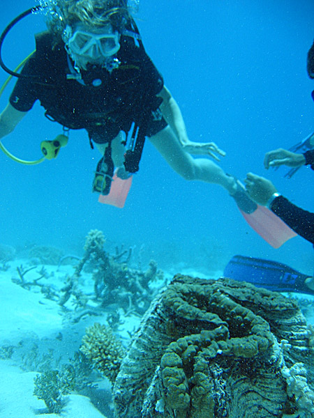

История освоения и туризм
Люди начали использовать коралловые острова Большого Барьерного рифа около 40 000 лет назад, после появления в Австралии предков коренных жителей (австралийских аборигенов) и жителей островов пролива Торреса, поселившихся на островах, образованных коралловым рифом около 10 000 лет назад. В 1768 году Луи де Бугенвиль обнаружил Большой Барьерный риф во время исследовательской экспедиции, однако не стал претендовать на закрепление прав на его территорию за Францией. 11 июня 1770 года, барк HM Bark Endeavour, капитаном которого был исследователь Джеймс Кук, налетел на мель (Большой Барьерный Риф), получив значительный ущерб. Наступления часа прилива в конечном итоге способствовало сохранению корабля и дало возможность продолжить плавание. Первые поселенцы были либо названы Джеймсом Куком, либо потом получили названия в его честь. Продолжая путь на север, Кук обнаружил вблизи острова Лизард судоходный проход и смог выйти в открытое море. Но многие корабли, пытающиеся повторить этот путь, оказались менее удачливы. Кораблекрушения стали частым явлением после того, как первые австралийские колонисты и исследователи стали использовать воды между рифом и материком Большой лагуны для выхода в пролив Торреса, через который проходили маршруты к крупнейшим торговым городам Индии и Китая, а также кратчайший путь из Тихого океана в Индийский океан. Среди моряков вскоре даже возникли споры о том, какой маршрут более безопасный: внешний — по Коралловому морю с проходом через риф или внутренний — между берегом и рифом. Одним из самых известных среди затонувших на Большом Барьерном рифе судов стала HMS Pandora, которая затонула 29 августа 1791 года, погибли 35 человек. В 1983 году экспедиция, организованная сотрудниками музея Квинсленда привела археологические раскопки на Пандоре. В 1815 году Чарлз Джеффрис стал первым человеком, сумевшим пройти на корабле вдоль всего Барьерного рифа со стороны суши. Но только в 1840-е годы, после того как была подробно исследована и нанесена на карту большая часть Большого барьерного рифа, этот маршрут стал более безопасным. В XIX веке учёные приступили к подробным исследованиям рифа. В это же время сюда прибывают деловые люди, надеясь реализовать здесь свой коммерческий потенциал. К концу XIX века в Лондон, Сингапур и Гонконг уже экспортировался жемчуг и трепанги, добытые с Большого барьерного рифа.
В наши дни возможность своими глазами увидеть подводный мир Большого Барьерного рифа привлекает сюда людей со всего мира. Над рифами курсируют многочисленные прогулочные суда со специальными смотровыми окнами. Сегодня весь Большой Барьерный риф объявлен морским парком, а в 1981 году внесён ЮНЕСКО в список «Всемирное наследие». Вся акватория и острова сейчас разделены на шесть зон доступности. Зона наиболее строгого контроля охраняется для научных исследований. Самая доступная — зона общего использования, здесь разрешён траловый лов, судоходство и другие виды умеренной эксплуатации природных ресурсов, такие как туризм, продажа кораллов и др. Однако экосистема Большого Барьерного рифа настолько уязвима, что на всей его протяжённости запрещены любые горные работы, добыча нефти и газа, а также коммерческая подводная охота как с аквалангом, так и без него. Туристы могут посещать только определённые, специально выбранные для этого острова. Цена поездки зависит от уровня обеспечиваемого комфорта. Острова Лизард и Хеймэн, например, приравнены к пятизвёздочным отелям, и поездка на них стоит недёшево, а на островах Уайтсандейз и Норт-Молл можно за небольшую плату разбить палатку в отведённом для этого месте. Прибыв на острова, туристы должны соблюдать строгие правила. Под водой туристам не разрешается касаться рифов, и парковые смотрители объясняют посетителям, как получить удовольствие от погружения с аквалангом, не нанося вреда окружающей среде. Поскольку обитаемы только несколько островов Большого рифа, возникают трудности в обеспечении жильём всё возрастающего потока туристов.